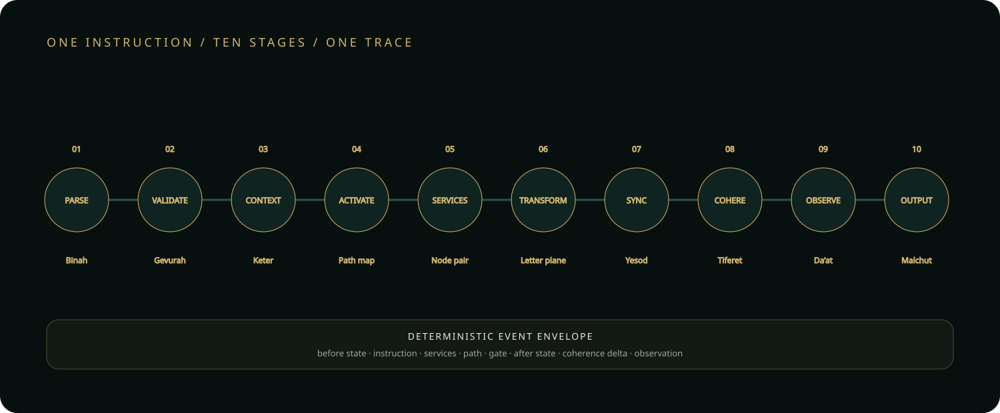

Parse
Normalize Hebrew source and preserve source locations.
Every accepted instruction travels through a fixed lifecycle. Each stage has one owner, one inspectable event, and an explicit failure boundary.

Normalize Hebrew source and preserve source locations.
Reject unsupported source, invalid bounds, and denied capabilities.
Bind purpose, engine version, seed, and resource budget.
Resolve the instruction’s architectural route.
Record which service responsibilities participate.
Execute exactly once in the canonical IvritCode engine.
Record state and replay inputs at the integration boundary.
Reconcile trace metadata without altering register semantics.
Commit one deterministic, inspectable snapshot.
Render the validated snapshot to screen, sound, file, or export.
Sequence, stage identifier, status, message, state hash, path, gate, and register changes make the run auditable and replayable.
A failure stops the lifecycle and reports its owner. The active machine state is not partially committed, and Malchut remains locked.